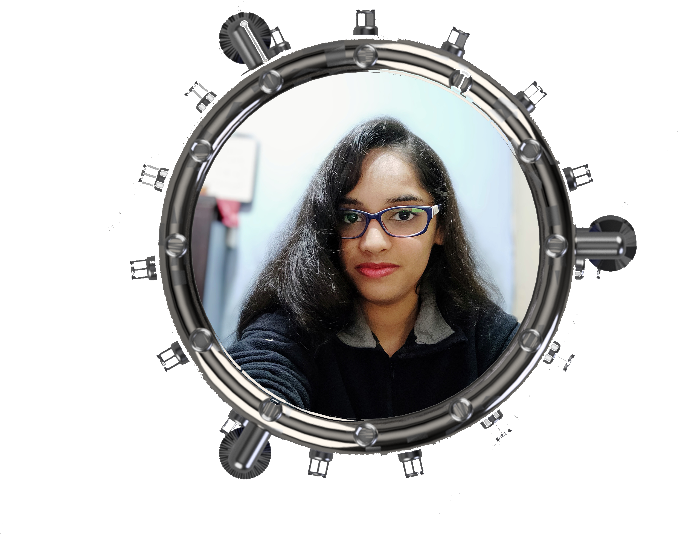

Project
The 21st century has seen a huge advancement in Science & technology, from creating machines in life to creating life in machines. Space settlement has been a dream for many people from the time of first human space mission. The idea of Space settlement has opened gates for humans to create a life sustaining and friendly environment in space. “OPUS” Space settlement has been designed to house a 1000-member society onboard, providing sufficient supplies for life sustenance. Opus focuses deeply on the aspects of the settlement design, Life support systems and Energy, Water & Waste Management. Different techniques for extraction of resources present around Opus, Location chosen (L5), Defence system, dangers and solutions have been discussed in the report. Emphasis given to on-board Space research, astronomical observations, training, selection criteria, technical advancements are also mentioned in this report. With a well-built transportation and communication system, OPUS would be a functional and small paradise of its own. The main aim of OPUS is to provide a gateway for new possibilities and expansion using advanced technology.
The detailed report of the project can be found here.
Gallery
About
Team
"I am a dreamer, seeking to create a better world, one step at a time.
I do have my flaws, and I am not perfect, but slowly and steadily I am working on truly actualizing the potential that I have.
Eventually, I would like to harness the true potential of this world, and in maximizing everything that life has to offer to us.
My imagination is the place that I create this world, and my work is the medium through which I actualize it.
Slow and steady, I make this world a better place."
LinkedIn Profile

"Pursuing third year Chemical Engineering at Rajiv Gandhi University of Knowledge Technologies, Nuzvid Andhra Pradesh
Ardent reader of Telugu literature, occasional player, binge watcher of sci-fi, fan-fic and thriller series, amateur subjective poet!
Interested in space and Environment."
LinkedIn Profile
"I want to create things I wish existed.
Everything about the sky fascinates me. At the age of 10, I got my first telescope and never got down from the terrace. I not only love exploring the night sky and celestial body but also capture it all. Hence, I take keen interest in astronomy and astro-photography.
Aero- modelling gives me a sense of relaxation and peace especially when I fly my models. It's truly an escape for me."
LinkedIn Profile
"I love to design, be it a website, a graphic design or an airplane model.
When I am designing, I am in my happy place. It fascinates me to see a hunk of metal, a blank page or anything dull get turned into something refined and beautiful.
I like reading comics & books, going for long walks and listening to music."
LinkedIn Profile
"Pursuing third year Mechanical Engineering at Birla Institute of Technology, Mesra, Ranchi.
Love reading books, highly critical about movies. Enthusiastic about automobile, interested in space technologies and everything that has to do with Machines."
LinkedIn Profile
"Hello fellow Earthlings,
I am Arjun hailing from 'God's Own Country'. I graduated in Mechanical engineering and is now on the lookout for opportunities in the wide world of engineering!
I'm an avid reader and a great fan of movies with particular interest in sci-fi movies. Loves classical music, can't recite anything else than sa-pa-sa though, and an absolute foodie.
Loves working in teams and it has been an absolute pleasure for me to be part of Team OPUS!"
LinkedIn Profile
"A space enthusiast from UPES Dehradun persuing final year in Btech Aerospace.
Passionate about space technologies and exploration, fond of listening to music and travelling, likes binge watch and an amateur baker!"
LinkedIn Profile
"Pursuing Bachelor of Technology 4th year Aerospace Engineering at SASTRA Deemed University, Thanjavur Tamil nadu.
I am a Space Enthusiast, whatever new things i learn i love to connect with my technical field. I am good Technical stuff like Adobe Photoshop, Solidworks Proffessional & ANSYS Fluent.
I am a good chef and dancer though.
I am movie freak!"
LinkedIn Profile

"B.Tech in Aerospace Engineering at Dayananda Sagar University, Bangalore, Karnataka.
Space Enthusiast, Entrepreneur - Handcrafted Clothing, Basketball Player, Dancer, Amature Painter."
LinkedIn Profile
"A Chemical Engineering Major frim Manipal Institute of Technology, with a Specilizarion in Public Health and Epidemiology.
Biswas designed the Population Distribution structure for Opus.
He is a traveler, who always travels alone and learns a new recipe wherever he goes.
He has a genuine love for Cinema , places and food."
LinkedIn Profile

"Pursuing final year in electrical and electronics engineering at Rajarajeshwari college of engineering, Bangalore.
Space has fascinated me since my age of 3 with it's infinite frontiers and unexplored cosmos. Astrophotography and skywatching being my greatest passion and Dancing and painting are my hobbies. On a lighter note you can say I walk, talk, eat, sleep..... Astronautics!"
LinkedIn Profile
LinkedIn Profile
"Pursuing BE in Aeronautical Engineering at MVJ College of Engineering, Bangalore.
A pet lover and a dancer and a sports enthusiast.
A factual person but loves Cartoon!
Loves to excel in all fields of Aviation."